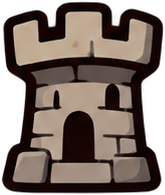
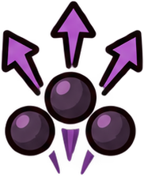
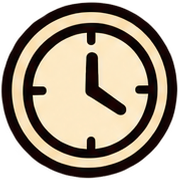

포탑·영웅 자동 공격 | 탭 · 집중 포격
영웅: 대기 7 + 공격 7프레임포탑: 분리 회전·반동 + 발사 이펙트 4프레임잡몹·미사일: 각 4프레임
마왕은 떠났다.하지만 우리의 근무는 아직 끝나지 않았다.

약 4–6분 · 키워드 7종 · 적 특성 4종 · 엘리트와 저주
이번 런을 이끌 힘을 하나 선택하세요.
같은 키워드 ★3 = 진화 · 선택 중에는 전투가 멈춥니다
마왕군도 숨 돌릴 시간은 필요하죠.
소울로 다음 런의 가능성을 넓힙니다. 숫자가 아니라 선택지가 늘어납니다.

이번 판의 빌드